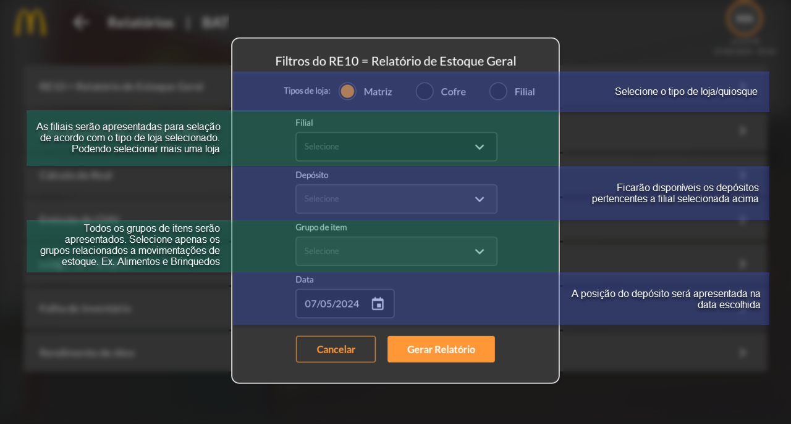
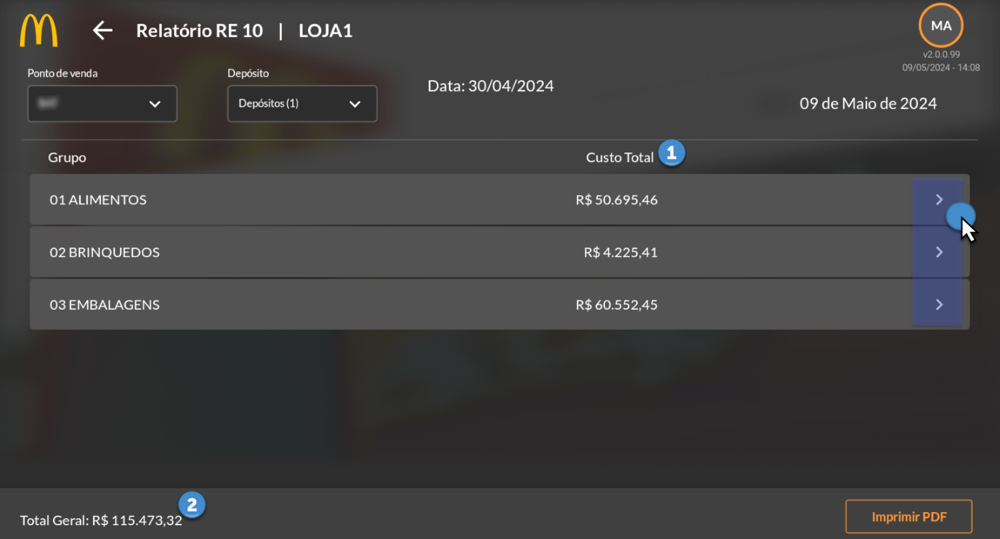
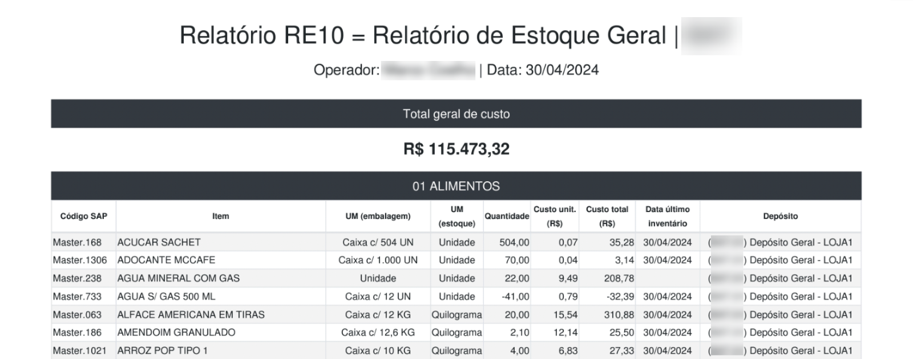
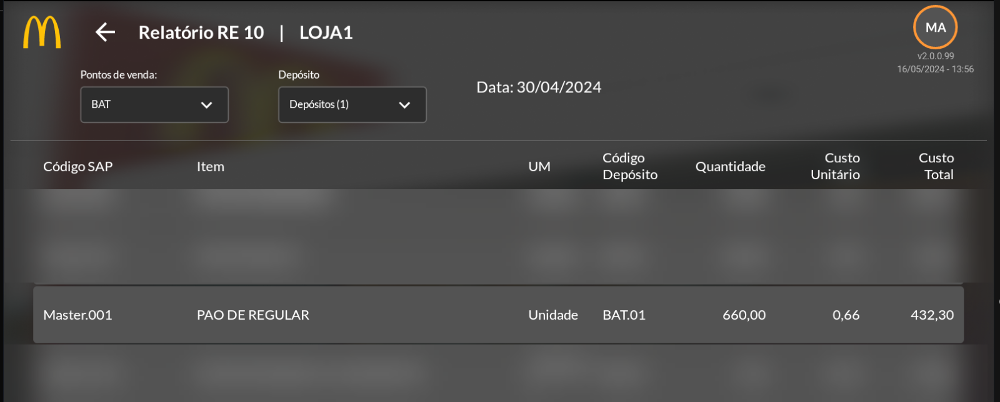
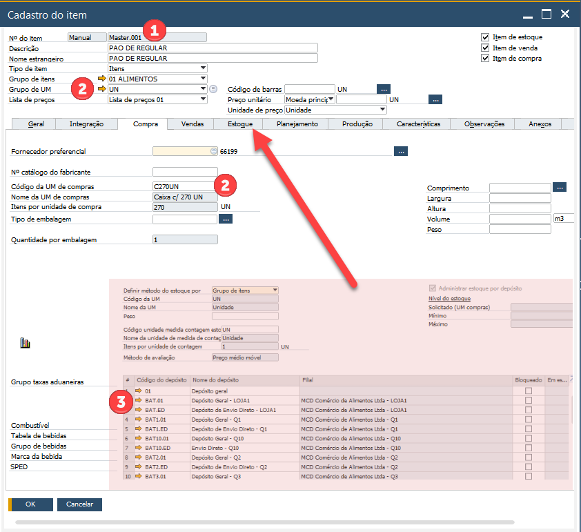

RE10 - Relatório de Estoque Geral
O RE10 (Relatório do Estoque Geral) traz uma visão abrangente dos itens disponíveis no estoque, os itens Master. Nele, podemos consultar quantidade dos itens, além do custo unitário e total presente no inventário de acordo com a data escolhida podendo selecionar separação por depósito ou selecionar todos os depósitos disponíveis para uma visão mais ampla.
Ao selecionar o relatório RE10 abrirá na tela as opções de filtragens para a geração do relatório. Nessa tela, selecione as opções de acordo com a imagem abaixo.
Após definido as opções de filtragem, clique em “Gerar Relatório”. As informações serão apresentadas de acordo com os grupos de itens selecionados de forma macro, apresentando custo total por grupo de item (1) e custo total geral (2) somando os valores apresentados em cada grupo de item. Caso necessite de uma análise detalhada, ou seja, item a item, clique sobre o grupo para expandir o resultado.
Ao clicar na seta, de acordo com a imagem acima, o grupo de item será expandido permitindo a visualização item a item. Sendo apresentado as seguintes informações:
Código SAP: Código registrado no SAP de acordo com as integrações de cadastros, sendo os itens Master recebidos por meio de API da Arcos Dourados;
Item: Descrição do Item como está configurado no SAP;
UM: Unidade de medida padrão do estoque para o item, sendo: Unidade, Quilograma ou Litro;
Código Depósito: Código do depósito cadastrado no SAP vinculado a loja/quiosque selecionado;
Quantidade: Quantidade em estoque de acordo com o filtro de data informado;
Custo Unitário: Custo unitário do item;
Custo Total: Custo total para o item; e
Total: Informação com o total do grupo selecionado.
Para gerar o arquivo em PDF, basta clicar em “Imprimir PDF”. O arquivo será gerado com todas as informações disponíveis para o RE10 de forma completa. Veja um exemplo na imagem abaixo.
A composição do RE10 está de acordo com o que foi transacionado no SAP Business One. Sua estrutura está diretamente ligada a todos os processos executados no SAP e loja que afetam o inventário, sendo: Recebimento de Nota Fiscal de Entrada, Contagens, Motivos de Saída, Transferência e Empréstimos e vendas (com a geração de forma automática da NF de saída e baixa de estoque). Essas transações compõe as informações em Quantidade, Custo Unitário, Custo Total e Total.
Caso seja necessário a consulta de um item específico encontrado no RE10 com uma possível inconsistência, entre no SAP Business One e pesquise o item em questão para análise.
Veja no exemplo a consulta no RE10 do item Master.001, Pão de Regular.
Pelo aplicativo gerado relatório onde foi apresentado a quantidade de 660 unidades de carne de regular no depósito BAT.01, pelo custo unitário R$0,66, sendo custo total de R$432,30 (quantidade x custo unitário), considerando a posição em 30/04/2024.
Entre em cadastro de item no SAP e pesquise pelo Master.001.
Ao consultar o item é possível ver as seguintes informações do RE10, sendo: Código SAP (1), Unidade de Medida (2) e Código do Depósito (3). Note que a quantidade que está no depósito dessa tela não é o mesmo do dia 30/04/2024, mas sim o total em estoque no momento da consulta.
A quantidade está relacionada a todos os lançamentos efetuados no estoque como citado anteriormente. Importante lembrar que lançamentos retroativos, pendências de recebimento de mercadorias, lançamentos (contagem, motivos de saída, transferências para quiosques e empréstimos entre lojas) em aberto podem interferir no resultado. É importante para que se tenha uma informação confiável, validar se todos esses processos estão finalizados/fechados para que se tenha uma posição de estoque condizente com o real.
O custo do item é de acordo com os recebimentos das Notas Fiscais de entrada pela loja, considerando a divisão da quantidade pelo valor total.
(Valor NF – Crédito de Impostos Incusos no preço + Impostos fora do preço) / Quantidade de itens = Custo Médio Unitário